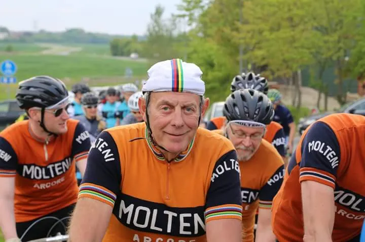
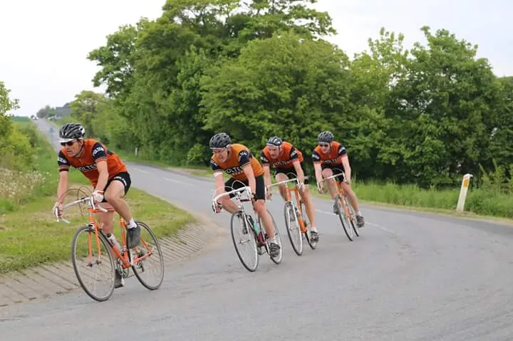
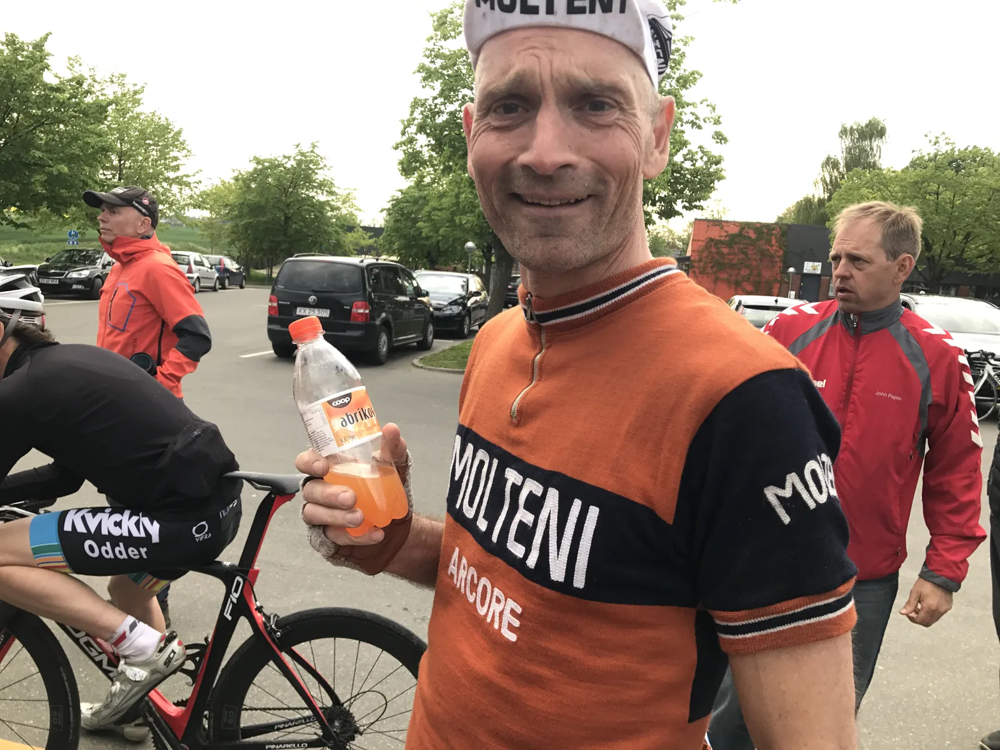

Kæmpe drama ved holdløbet i Mårslet: Lyn-DNF og brutalt styrt

Squadra Molteni elsker drama, og det var der masser af ved tirsdagens holdløb i Mårslet. Holdet blev lynhurtigt reduceret til fire mand, og på næstsidste omgang røg Svend en ordentlig tur i asfalten.
I høj sol og og 20 graders varme var Squadra Molteni’s fem ryttere på vej til startbyen i Mårslet, lidt uden for Aarhus. Capitaine de Route, Per Sandahl, var blevet kaldt ind i sidst øjeblik for at tilslutte sig Eigil, Niels, Kasper og Svend.
Ruten skulle gennemkøres 4 gange; 40 km. i alt. Niels og Eigil kom direkte fra Kiddesvej, og benene bar helt klar!
– Vi nåede ikke en opvarmningsrunde, men ruten kendte vi jo fra sidste år – og Per havde jo lagt taktikken: “Vi kører som vi plejer”, så hvorfor bruge unødige kræfter på det, udtaler Niels Bjørnsteen.

Mafia-lignende tilstande I Mårslet
Ved starten blev det oplyst, at der var en mindre ruteændring. Og for et par ældre herre, kan det godt give anledning til nervøsitet, og ikke mindst konspirationsteorier.
– Nu har jeg lagt og trænet på den her rute det sidste år, for at blive klar, og så bliver den ændret i sidste øjeblik! Det er jo mafia-lignende tilstande. Vi så det med Moser i Giro’en i 84, og vi ser det nu igen i 2017, udtaler en bitter Svend Seegert.
Ny danmarksrekord i DNF
Starten gik ud af byens kringlede sving, og efter godt en kilometers penge, trækker Per Sandahl stikket. Han har simpelthen lagt for hårdt ud og må slippe.
– Per gjorde sit arbejde tilfredsstillende den første kilometer. Per kom med på et afbud i søndags, og har jo ikke haft tid til at træne. Han gav sig fuldt ud, mere kan man ikke forvente, udtaler Kasper Sørensen.
Guinness Book of Records har efterfølgende været i kontakt med Per, da han nu er indehaver af den officielle danmarksrekord i hurtigste DFN i holdløb.
Godt samarbejde og hurtige omgangstider
Efter Per’s hurtige exit, fandt holdet hurtigt ind i en god rytme. Svend og Niels tog nogle ordentlige herreføringer, og bjergrytter-Eigil viste forrygende form ved at vise sig brølstærk i modvinden. Kasper skulle lige have varmet diesel-motoren op.

Samarbejdet fungerede godt, og på anden omgang begyndte holdet at overhale et apr foranstartende hold. 2. omgang blev kørt med et snit på 38 km./t.
Styrt….
Men bedst som holdet var ved enden af tredje omgang, indtraf katastrofen: I et galt venstresving skrider Svend’s cykel, og han lander hårdt på hoften. Kaptajn Niels Bjørnsteen beordrer ro på, og stille og roligt kommer toget i gang igen.
Svend slipper med overfladiske skrammer og blå mærker. Plus en lille rift i Molteni-trøjen, men en lap derpå, og så er den i vinkel.
Styrtet sker på den nye del af ruten, som Svend ikke har trænet på, og det sidste er nok ikke sagt i den sag.
Trods smerter tager Svend nogle gode føringer på sidste omgang, hvor Kasper også er kommet i omdrejninger.
7. plads og abrikosvand
Der bliver givet fuld gas, og trods styrtet kører holdet den hurtigste omgangstid (38,8 km./t.) og drøner ind på en 7. plads.
Sidste års fjerdeplads blev altså ikke forbedret. Men trods det, er kaptajnen tilfreds med resultatet.
– Vi kører hele løbet med kun 4 mand, vi har et styrt der rundt regnet koster os ca. 9 minutter og 33 sekunder. Kigger du på resultatlisten, vil du se, at det lige præcis havde været nok til sejren, udtaler Niels Bjørnsteen.

Ved målstregen stod Per og ventede, og havde i mellemtiden ikke spildt tiden. Han havde kvalitetssikret både grillpølserne og kagen. Og til holdets store tilfredshed var der vaskeægte abrikosvand fra da far var barn.
Omgangstider
- Runde 1: 35,9 km./t., 18:44 min.
- Runde 2: 37,7 km./t., 16:21 min.
- Runde 3: 36,4 km./t., 18:21 min.
- Runde 4: 38,8 km./t., 15:30 min.